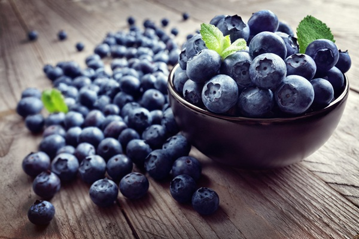

<article>
  <div class="container5">
    <div class="blog1s">
      <p class="tieude1s"><a href="https://duongtt.herokuapp.com/shoppingcenter.html">Blog Fruits</a> </p>
      <hr/>
      <div class="noidung1">
        <p style="font-family: sans-serif ;color: black ; text-decoration: underline; font-size: 15px;">HIỂU VỀ TRÁI CÂY</p>
        <h1 style="font-size: 30px">Việt Quất – Loại quả tuyệt vời cho sức khỏe</h1><br/>
        <br/><br/>
        <p>Trái việt quất Blueberry hay còn gọi là Sim Úc, là một loại quả có nhiều chất bổ dưỡng giúp
          chống lại bệnh tiểu đường, bệnh tim mạch, giảm cholesterol và nhất là hiện tượng lão hóa của
          các tế bào trong cơ thể.</p><br/>
        <p>Đây còn được mệnh danh là một loại quả để chế thuốc trường sinh, mang lại tuổi thọ lý tưởng
          cho con người. Trái việt quất là quả của một loại cây bụi thuộc họ Vaccinium, cũng giống như
          Nam Việt Quất, trái việt quất có rất nhiều chất có lợi cho sức khỏe và được coi là phương
          thuốc vàng cho sức khỏe. Trái việt quất rất nhiều chất chống oxy hóa, tác dụng của trái việt
          quất là duy trì sức khỏe tổng thể và tăng cường hệ miễn dịch cho cơ thể.</p><br/>
        <br/><br/>
        <p>Dưới đây là một số lợi ích sức khỏe đã được chứng minh của trái việt quất Blueberry.</p><br/>
        <h3 class="tieude2">1. Trái việt quất có tác dụng vô hiệu hóa các gốc tự do</h3><br/>
        <p>Trái việt quất có chứa anthocyanin, đây chính là sắc tố tạo nên màu xanh đậm cho trái Việt Quất.
          Loại chất này có tác dụng vô hiệu hóa các gốc tự do dẫn đến bệnh ung thư và các bệnh liên quan đến tuổi.</p><br/>
        <p>Trái việt quất có chứa anthocyanin, đây chính là sắc tố tạo nên màu xanh đậm cho quả. Loại chất
          này có tác dụng vô hiệu hóa các gốc tự do dẫn đến bệnh ung thư và các bệnh liên quan đến tuổi.</p><br/>
        <h3 class="tieude2">2. Trái việt quất có tác dụng cải thiện trí nhớ</h3><br/>
        <p>Trái việt quất là loại thực phẩm tốt nhất dành cho bộ não, vì chúng kích thích các tín hiệu thần
          kinh của não. Chúng giúp bộ não chống lại stress oxy hóa và giảm các vấn đề về trí nhớ liên quan
          đến tuổi tác như chứng mất trí và bệnh alzheimer. Các nhà nghiên cứu đã chỉ ra rằng thêm quả Việt
          Quất vào chế độ ăn hàng ngày sẽ giúp cải thiện đáng kể bộ nhớ và chức năng não.</p><br/>
        <p>Một nghiên cứu 12 tuần của Đại học Cincinna (Mỹ) chỉ ra rằng, người lớn tuổi có thể cải thiện trí
          nhớ của mình sau khi dùng nước ép việt quất hàng ngày. Các nhà nghiên cứu kết luận rằng, kết quả
          này có được là nhờ chất chống oxy hóa và hợp chất chống viêm được biết với tên anthocyanin được tìm thấy trong việt quất.</p><br/>
        <h3 class="tieude2">3. Trái việt quất có tác dụng duy trì thị lực tốt</h3><br/>
        <p>Nhờ giàu anthocyanoside, quả việt quất có thể giúp làm chậm quá trình giảm thị lực. Nhờ vào thành
          phần chống oxy hóa, loại quả mọng nhỏ bé này có thể trì hoãn hoặc ngăn cản các vấn đề về thị lực
          liên quan đến tuổi tác, bao gồm: đục thủy tinh thể, thoái hóa điểm vàng, cận thị và viễn thị.</p><br/>
        <p>Vấn đề là, việt quất có chứa một nhóm đặc biệt các chất chống oxy hóa mạnh như carotenoid
          (Zeaxanthin, lutein), flavonoid (resveritrol, rutin, quercetin), cũng như các vitamin A, C và
          E, selen, phốt pho, kẽm… Tất cả đều là những dưỡng chất thiết yếu và có lợi cho sức khỏe mắt.</p><br/>
        <h3 class="tieude2">4. Trái việt quất có tác dụng hạ cholesterol</h3><br/>
        <p>Một trong những lợi ích sức khỏe tuyệt vời của quả Việt Quất là hạ cholesterol. Một nghiên cứu
          gần đây cho thấy, trong quả Việt Quất có chứa một hợp chất có tác dụng như các loại thuốc giúp
          giảm cholesterol mà không có tác dụng phụ.</p><br/>
        <h3 class="tieude2">5. Quất có tác dụng ngăn ngừa bệnh timt</h3><br/>
        <p>Trái việt quất có tác dụng giữ cholesterol dưới mức cho phép, do đó mà chúng có tác dụng cải
          thiện sức khỏe tim mạch. Sự hiện diện của chất chống oxy hóa và chất xơ biến loại quả này
          thành loại quả tuyệt vời trong việc bảo vệ sức khỏe của trái tim.</p><br/>
        <h3 class="tieude2">6. Trái việt quất có tác dụng ngăn ngừa nhiễm trùng đường tiết niệu (UTIs):</h3><br/>
        <p>Quả việt quất có thể hữu ích trong việc ngăn ngừa UTIs, bởi chúng có chứa hợp chất được biết
          đến với tên gọi flavonoid. Flavonoid tốt trong việc giúp cơ thể chống và loại bỏ các nhiễm trùng do vi khuẩn.</p><br/>
        <h3 class="tieude2">7. Trái việt quất có tác dụng ngăn ngừa táo bón</h3><br/>
        <p>Quả Việt Quất rất giàu chất xơ, một loại chất dinh dưỡng giúp ngăn ngừa táo bón. Bên cạnh đó, khả
          năng đồng hóa chất natri, fructose và các vitamin trong quả Việt Quất có tác dụng rất lớn trong
          việc cải thiện tiêu hóa.</p><br/>
        <h3 class="tieude2">8. Trái việt quất có tác dụng giảm mỡ bụng</h3><br/>
        <p>Các nhà nghiên cứu của Đại học Michigan đã chỉ ra rằng, quả Việt Quất có tác dụng giảm mỡ bụng.
          Nghiên cứu được tiến hành trên chuột trong thời hạn 90 ngày. Các nhà khoa học đã tạo ra một hỗn
          hợp bột trong đó thành phần chủ yếu là quả Việt Quất và kết quả là những con chuột này có ít mỡ
          bụng hơn so với chuột không có quả Việt Quất trong chế độ ăn.</p><br/>
        <h3 class="tieude2">9. Trái việt quất có tác dụng làm chậm quá trình lão hóa</h3><br/>
        <p>Bộ Nông nghiệp Mỹ xếp hạng quả việt quất là loại quả chứa nhiều chất chống oxy hóa nhất trong số
          các loại trái cây có chứa chất này. Một số các chất chống oxy hóa có trong quả việt quất là
          anthocyanins, phenol, axit ellagic, vitamin C và vitamin E.</p><br/>
        <p>Quả Việt Quất đã được chứng minh có tác dụng làm chậm quá trình lão hóa. Các chất chống oxy hóa
          và chống viêm của qủa Việt Quất có tác dụng xây dựng một lớp bảo vệ xung quanh não để chống lại
          những dấu hiệu của lão hóa và suy giảm.</p><br/>
        <h3 class="tieude2">10. Trái việt quất có tác dụng tăng cường hệ thống miễn dịch</h3><br/>
        <p>Các chất chống oxy hóa như vitamin A, vitamin B phức tạp, vitamin C, vitamin E, anthocyanin,
          đồng, sắt, selen, kẽm chứa trong trái Việt Quất giúp tăng cường hệ thống miễn dịch. Vì vậy
          chúng giúp cơ thể chiến đấu chống lại các bệnh nhiễm trùng do virus và vi khuẩn.</p><br/>
        <h3 class="tieude2">11. Giảm viêm nhiễm</h3><br/>
        <p>Cùng với các tác dụng chống viêm đã được ghi nhận của anthocyanin, flavonoid trong quả việt quất
          cũng được biết đến với thành phần chống viêm. Chất này khiến việt quất hữu ích trong việc chống
          các bệnh viêm như viêm khớp. Dĩ nhiên, điều kiện yêu cầu là bạn phải có một lối sống lành mạnh
          và một chế độ ăn tốt, tập thể dục thường xuyên để có được kết quả tốt nhất. Nhưng sử dụng quả
          việt quất hợp lý cũng có thể góp phần giúp bạn giảm đau.</p><br/>
        <h3 class="tieude2">12. Ngăn ngừa ung thư</h3><br/>
        <p>Một trong những tin thú vị và đầy hi vọng nhất đến từ nghiên cứu về tác dụng với sức khỏe của
          quả việt quất, đó là khả năng ngăn ngừa và hạn chế sự phát triển của các tế bào ung thư. Các
          nghiên cứu này cho đến nay mới chỉ được thực hiện trên động vật hoặc trên các tế bào của người
          trong phòng thí nghiệm. Tuy nhiên, các nhà nghiên cứu đã có những kết quả đầy hứa hẹn đảm bảo
          sẽ dẫn tới nhiều nghiên cứu hơn nữa trong tương lai.</p><br/>
        <h3 class="tieude2">13. Tốt cho da và tóc</h3><br/>
        <p>Bạn đã bao giờ tự hỏi làm thế nào để có được một làn da và mái tóc khỏe đẹp tự nhiên? Ăn một
          chén việt quất mỗi ngày có thể mang lại những lợi ích tuyệt vời như một làn da sáng, một mái
          tóc khỏe mạnh và sáng bóng. Việt quất giúp chống lại các gốc tự do gây hại và chất chống oxy
          hóa có trong việt quất giúp bảo vệ bạn khỏi lão hóa sớm. Đây chính là lý do tuyệt vời để bạn ăn việt quất hàng ngày.</p><br/>
        <h3 class="tieude2">14. Cải thiện hệ tiêu hóa</h3><br/>
        <p>Cuối cùng nhưng không kém lợi ích đó là việt quất có thể giúp cho hệ thống tiêu hóa của bạn
          khỏe mạnh. Các vitamin, đồng, natri, chất xơ, đường fructose và axit có trong việt quất giúp
          cải thiện hệ tiêu hóa và có thể giúp bạn cảm thấy no lâu hơn. Cả việt quất tươi và khô đều có
          thể tạo nên những món sinh tố hay bánh ngon tuyệt. Đây là cách tuyệt vời để gặt hái những lợi
          ích từ quả việt quất.</p><br/>
        <p>Thậm chí nếu bạn chẳng hề lo lắng về bất cứ bệnh gì, bạn cũng nên cân nhắc việc nhấm nháp việt
          quất thay vì 1 túi khoai tây chiên to. Ăn tươi hay làm sinh tố việt quất là cách dễ dàng để
          mang lại dưỡng chất quan trọng cho cơ thể của bạn.</p><br/>
        <h3 class="tieude2">15. Giàu chất chống oxy hóa, tốt cho chị em</h3><br/>
        <p>Bộ Nông nghiệp Mỹ xếp hạng quả việt quất là loại quả chứa nhiều chất chống oxy hóa nhất trong
          số các loại trái cây có chứa chất này. Một số các chất chống oxy hóa có trong quả việt quất
          là anthocyanins, phenol, axit ellagic, vitamin C và vitamin E.</p><br/>
        <p>Quả việt quất có chứa anthocyanin, đây chính là sắc tố tạo nên màu xanh đậm cho quả. Loại chất
          này có tác dụng vô hiệu hóa các gốc tự do dẫn đến bệnh ung thư và các bệnh liên quan đến tuổi.
          Ngoài ra, các chất dinh dưỡng chứa trong quả việt quất được chứng minh là có tác dụng duy trì
          và tăng cường thị lực, cải thiện trí nhớ, ngăn ngừa bệnh tim, giảm nguy cơ nhiễm trùng đường
          tiết niệu và làm chậm quá trình lão hóa…</p><br/>
        <h3 class="tieude2">16. Tăng cường sức mạnh trí não</h3><br/>
        <p>Một chế độ ăn nhiều quả việt quất sẽ đem lại khả năng học tập nhanh hơn, suy nghĩ sắc bén hơn,
          và cải thiện trí nhớ tốt hơn. Và các nhà khoa học cũng chứng minh sức mạnh chống oxy hóa của
          quả việt quất để xóa các gốc tự do và làm giảm căng thẳng gây thoái hóa thần kinh.</p><br/>
        <h3 class="tieude2">17. Tốt cho sức khỏe bà bầu</h3><br/>
        <p>Nghiên cứu khoa học cũng chỉ ra rằng, quả việt quất chứa nhiều vitamin và chất chống oxy hóa
          giúp tăng sức đề kháng cho mẹ bầu và ngăn ngừa ung thư. Ngoài ra, axit béo omega–3 trong loại
          trái cây này còn giúp cải thiện não bộ, giúp em bé trong bụng thông minh hơn.</p><br/>
      </div>
    </div>
  </div>
</article>


